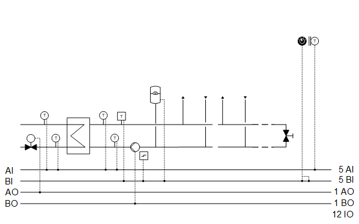
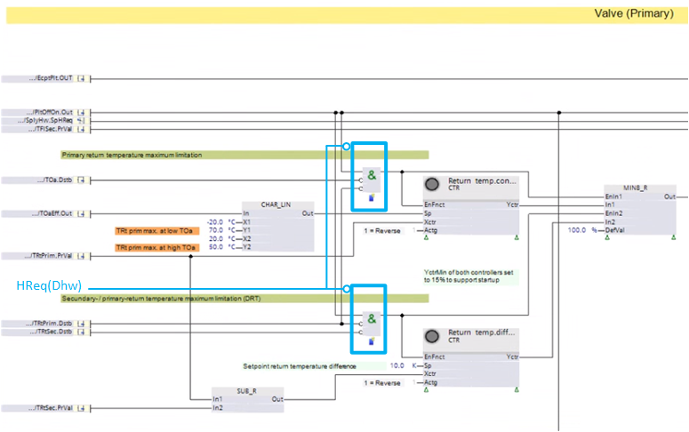

[Dsh21] District heating, transfer station, 1 heat exchanger
Plant example Dsh21 is a district heating substation with one heat exchanger.
Functions
- Collects heat demand and controls to the corresponding setpoint for the secondary flow temperature
- Primary return temperature maximum limitation
- Return temperature differential limitation (DRT)
Plant diagram

Components
- Valve (primary)
- Pump (secondary)
- Primary and secondary flow and return temperature sensor
- Sensor for outside temperature
Components and functions
Components and functions of the plant example:
Component | Function | BACnet object |
|---|---|---|
| Operating mode switch Switches the plant to: Auto | Off | On | [MI] Operating mode switch |
| Manual operating mode selection Switches the plant to: Auto | Off | On | [MCnfVal] Manual operating mode selection |
| Present operating mode Reports the present operating mode: Off | On | [MCalcVal] Present operating mode |
| Reason for present operating mode Reports the reason for the present operating mode: Exception | Operating mode switch | Manual operating mode selection | Heating limit | Heat request | Scheduler | [MCalcVal] Reason for present operating mode |
| Heat request Acquires and evaluates the heat request. | [ACnfVal] Offset for setpoint heating request [ACnfVal] Minimum setpoint heating request |
| Sensor for outside temperature Measures outside temperature. | [AI] Outside air temperature |
| Fault message expansion vessel Reports faults. Switches the plant off. | [BI] Fault expansion vessel |
| Secondary pump | Pump (Secondary) |
Command Switches on/off the pump as needed. | > [BO] Command | |
Fault message Reports faults. Switches the plant off. | > [BI] Fault | |
Pump run when the outside air temperature is low Pump always operates at low outside temperatures (frost protection). |
| |
Kick function (pump kick) Prevents the pump from seizing during long idle periods. |
| |
Overtemperature detector Closes the primary valve. The secondary pump is switched on for two minutes. The pump is then switched off. Switches the plant off. | > [BI] Safety temperature limiter | |
| Secondary return temperature sensor Measures the secondary return temperature. | [AI] Secondary return temperature |
| Secondary flow temperature sensor Measures the secondary flow temperature. | [AI] Secondary flow temperature |
Heat exchanger | Heat exchanger | |
| Primary return temperature sensor Measures the primary return temperature. | [AI] Primary return temperature |
| Primary flow temperature sensor Measures the primary flow temperature. | [AI] Primary flow temperature |
Valve (primary) Throttles the primary water volume to maintain the desired secondary flow temperature. | Valve (Primary) > [Controller] Temperature controller | |
Primary return temperature maximum limitation Controls the maximum primary return temperature. The setpoint is generated in a floating manner based on outside temperature. Limits the temperature controller for the secondary flow temperature to a minimum of e.g. 15%. | > [Controller] Limitation controller, maximum return temperature | |
Return temperature differential limitation (DRT) Controls the maximum difference between the primary and secondary return temperature. For example, if the difference between the primary and secondary return temperature (DRT value) is exceeded during ramp-up, the control value closes and reduces the volume flow until the primary return temperature cools to the DRT value. Limits the temperature controller for the secondary flow temperature to a minimum of e.g. 15%. | > [Controller] Return temperature differential limitation controller | |
Limitation active Indicates that the output of the temperature controller for the secondary flow temperature is limited. | > [BCalcVal] Limitation active | |
Positioning | > [AO] Position |


Functions and diagrams
Plant example Dsh21 is a district heating substation with one heat exchanger. Dsh21 can also be used as a precontroller with heat exchanger to hydraulically separate 2 heating systems.
Outside air temperature
The outside temperature [TOa] is used unfiltered and filtered.
Signal name | Description | Filter constant | Use |
|---|---|---|---|
|
TOa | Outside air temperature | Unfiltered | Pump run when the outside air temperature is low |
TOaEff | Effective outside air temperature | 1h | Floating setpoint generation for maximum primary return temperature |
Collect heating requests
The heat request can be gathered from different consumers. Binary demand messages and analog demand setpoints can be collected.
The program receives one function block each of type [R_B] Read binary that can be linked to a binary demand message via BACnet and an input block of type [R_A] Read analog for an analog demand setpoint.
Additional demand signals can be connected in parallel: Binary to one OR and analog to one MAX block.
Secondary flow temperature control and limitation controller
BACnet objects
Name | Description | Object type | Default value |
|---|---|---|---|
Vlv(Prim)'TCtr | Temperature controller Controls the secondary flow temperature. | Controller | N/A |
The temperature controller acts as a PI controller (PID with derivative action time Tv=0) and compares the secondary flow temperature setpoint [PrSpTFlSec] against the secondary flow temperature [TFlSec] and calculates the valve position [Vlv(Prim)'Pos] on the output. The following controller variables are preset: | |||
Vlv(Prim)'TRtCtrMax | Return temperature controller for maximum limitation (option). Controls the maximum primary return temperature. The setpoint is generated in a floating manner based on outside temperature. | Controller | N/A |
The temperature controller acts as a PI controller (PID with derivative action time Tv=0) and compares the floating setpoints based on the outside temperature against the primary return temperature [TRtPrim] and calculates a limitation to the valve position [Vlv(Prim)'Pos] on the output. The following controller variables are preset: | |||
Vlv(Prim)SpTDiffRt | Setpoint return temperature differential | ACnfVal | 6 [K] |
Vlv(Prim)'TRtDiffLmCtr | Return temperature differential limitation controller Controls the maximum difference between the secondary and the primary return temperature. | Controller | N/A |
The temperature controller acts as a PI controller (PID with derivative action time Tv=0) and compares the return temperature differential setpoints, e.g. 6 K against the temperature differentials [TRtPrim - TRtSec] and calculates a limitation to the valve position [Vlv(Prim)'Pos] on the output. The following controller variables are preset: | |||
An active limitation is displayed using the [BCalcVal] object 'Limitation active'.
In the event that one or both limitations are temporarily disabled (e.g. for a heat demand from the domestic hot water handling plant), it can be carried out at the ANDs for enabling the limitation controller. See figure below:

Plant operating modes and control sequence
Plant operating modes:
- Off (1)
- On (2)
The operating modes are reported on [MCalcVal] object 'Present operating mode'.
At the same time, the reason for the present operating mode is reported to another [MCalcVal] object:
- Exception (1)
- Operating mode switch (2), resulting from an active (not equal to Auto) operating mode switch
- Manual operating mode selection (3), resulting from an active (not equal to Auto) manual operating mode selection
- Heat request (4)
There is a normal mode and local exception mode.
Normal operation
Sources for normal mode:
- [MI] Operating mode switch
- [MCnfVal] Manual operating mode selection
- Heat request
In normal mode, components are simultaneously switched on and off as per the operating mode.
Exception mode
Sources for exception mode:
- Fault to expansion vessel
- Fault to secondary pump
- Safety temperature limiter.
In exception mode, all outputs are switched off directly at priority 5 and the present operating mode is set to 'Off'.
Start-up control and alarm handling
Start-up control (nested chart SttUpAlmHdl)
The following functionality is available for an automatic startup of the plant, e.g. after a loss of power and return of power:
- Fixed switch-on delay (can be set on input pin [DlySttUp])
- The plant remains off to ensure communications are reliable and cross-check references are triggered. 'Exception' is reported as the reason for the present operating mode.
- Automatic acknowledge (2x) of possible pending alarms during a fixed switch-on delay.
- Additional adjustable delay for staged plant ramp-up (can be set on input pin [DlyOn])
Alarm handling (nested chart SttUpAlmHdl)
The state of events on the plant is acquired by BACnet object 'Plant state'. The state is mapped on function block [CMN_EVT] Common event.
The following functions are available:
- Automatic acknowledge (2x) after startup
- Alarm acknowledgement with a value object
- Alarm indication:
- For pending alarms On
- For unprocessed alarms flashing - Ability to connect the acknowledge button [BI]
- Ability to connect to an alarm indication [BO], e.g. an alarm lamp through an output block [BO]
- Ability to connect to other alarm handling functions on other plants, e.g. acknowledge button and alarm indication for multiple plants in the same control cabinet
I/O data points
Name | Description | Type | Signal/connection | State text | Engineering unit |
|---|---|---|---|---|---|
OpModSwi | Operating mode switch | MI | N/A | Auto | Off | On | N/A |
TOa | Outside temperature | AI | LG-Ni1000 | N/A | -70...70 [°C] |
FltExpsVss | Expansion vessel fault | BI | Contact NO | Normal | Tripped | N/A |
HExg'Pu(Sec)'Cmd | Heat exchanger pump (secondary) command | BO | Contact NO | Off | On | N/A |
HExg'Pu(Sec)'Flt | Heat exchanger pump (secondary) fault Alarm function: Basic (Notification class 8) Reference value: Triggered Time deviation: 0 [s] | BI | Contact NO | Normal | Tripped | N/A |
SftyTLm | Safety temperature limiter. Alarm function: Basic (Notification class 8) Reference value: Triggered Time deviation: 0 [s] | BI | Contact NO | Normal | Tripped | N/A |
HExg'TFlSec | Heat exchanger secondary flow temperature | AI | LG-Ni1000 | N/A | 0...100 [°C] |
HExg'TRtSec | Heat exchanger secondary return temperature | AI | LG-Ni1000 | N/A | 0...100 [°C] |
HExg'TFlPrim | Heat exchanger primary flow temperature | AI | LG-Ni1000 | N/A | 0...100 [°C] |
HExg'TRtPrim | Heat exchanger primary return temperature | AI | LG-Ni1000 | N/A | 0...100 [°C] |
HExg'Vlv(Prim)'Pos | Heat exchanger valve (primary) position | AO | 0...10V | N/A | 0...100 [%] |